Projections In Minkowsi Diagrams
The beauty of space-time diagrams is that they allow us to see how things look from different moving perspectives. In the interactive spacetime globe above, this can be done by moving the slider to transition between reference frames. In your Special Relativity classes, however, you will likely encounter Minkowski diagrams, which are a paper version of the spacetime globe. While in the online spacetime globe, the switching between frames is done for you by the code; on Minkowski paper, you can look at events from different perspectives through something called projections.
This section explains what projections are and how to use them to transform between reference frames on paper.
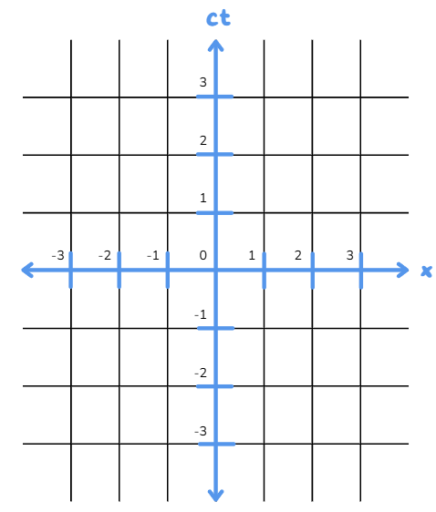
We always start with one reference frame, the observer frame, which has the x (space dimension) and ct (time dimension) axes at a 90-degree angle from each other, as you can see below.
It is important to remember that the observer frame does not have to be a stationary frame. In fact, according to the Principle of Relativity, there exists no true stationary frame, as each frame is equally valid to be chosen as the observer frame. Indeed, nothing is purely static in our Universe! The “observer” frame is simply the frame which does not have a velocity relative to the chosen observer.
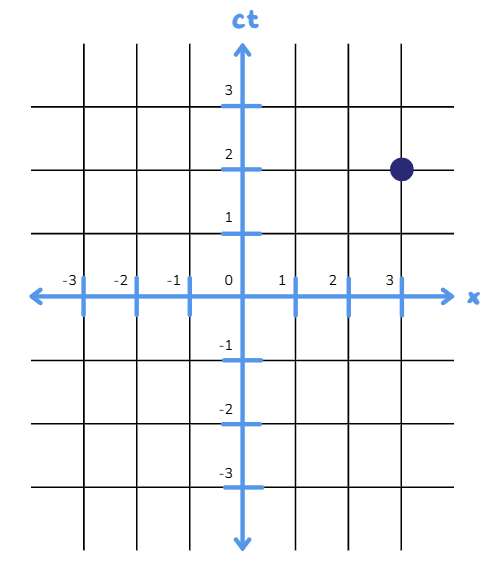
An event is something that happens at one point in space-time, meaning it has one ct coordinate (time) and one x coordinate (space), like the dark blue point below.
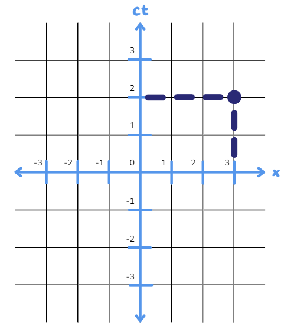
To read the x (or space) -coordinate of the event on this diagram, you have to follow the vertical dotted line (which is parallel to the ct-axis) from the point until the x-axis. To find the ct (or time)-coordinate, you have to follow the horizontal dotted line (which is parallel to the x-axis) from the point until the ct-axis. This “following of the dotted lines” is what we call projecting onto the axis.
This might all seem like primary school math, I know. But, bear with me, this was a necessary little recap before diving into… tilted axes.
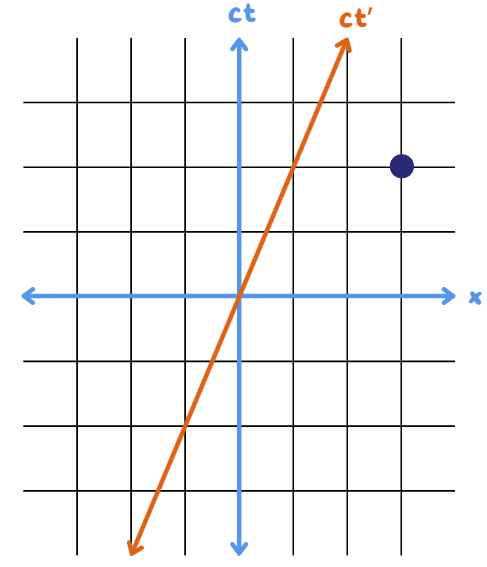
Suppose we add another reference frame, the target reference frame (in orange), which moves with constant velocity relative to the observer's reference frame (in blue). As you know from the MinutePhysics videos, the path or worldline of this moving frame can be represented by a slanted and stretched line. This line is the ct-axis of the second frame of reference. By convention, we call this the “primed axis” (ct’-axis).
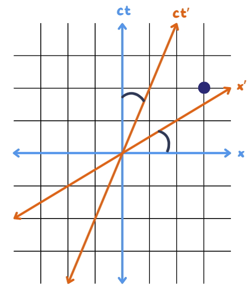
This primed ct-axis has a particular angle relative to the unprimed ct-axis. The primed x-axis is built with the same angle relative to the unprimed x-axis.
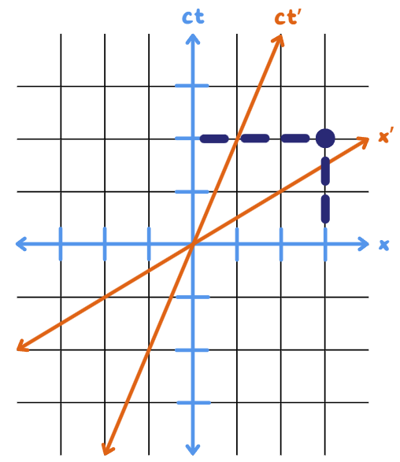
Reading the spacetime coordinates of the event in the observer's frame (in blue) doesn’t change; you still follow the vertical and horizontal dotted lines to project onto the axes, ending up with (3, 2).
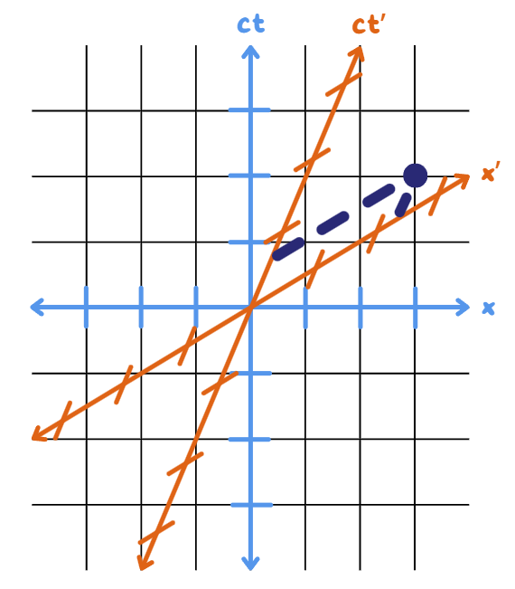
However, things change a little bit when we want to read the time and space at which the event happened for the orange target frame. Remember that we had to draw our dotted lines parallel to the axes when we did projections? Here, the axes are tilted, but the same logic applies: to read the value on the ct’-axis, we have to follow a dotted line that is parallel to the x’-axis and vice versa. This way, we will find different values for the time and place of this dark blue event depending on the reference frame we look at!
Moreover, look at the spacing between the blue tick marks versus between the orange ones… Do you notice that the orange ones are further away from each other? The fabric of space-time literally stretches when you see the world from a moving perspective.
The important thing to remember here is that the dotted line that projects the event onto the axis you want to read the information from must always be parallel to the other axis of the same frame. The dotted lines basically mean “as seen by [insert chosen frame of reference]”. Here, our event happens at (3, 2) in the blue reference frame, but at around (2.5, 0.5) in the orange reference frame.
This is how we read space-time diagrams: these values are… relative!
Make sure you properly understand how to do these kinds of projections before diving into more complex situations
You might have noticed, in the interactive spacetime globe above, that the tick marks of a tilted reference frame are slightly slanted. The slope of these ticks corresponds to the slope of the x’-axis. To project an event onto a ct-axis of a specific reference frame, you would have to draw a line from the event to the ct-axis of that frame, parallel to the tickmarks on this axis, as shown below.
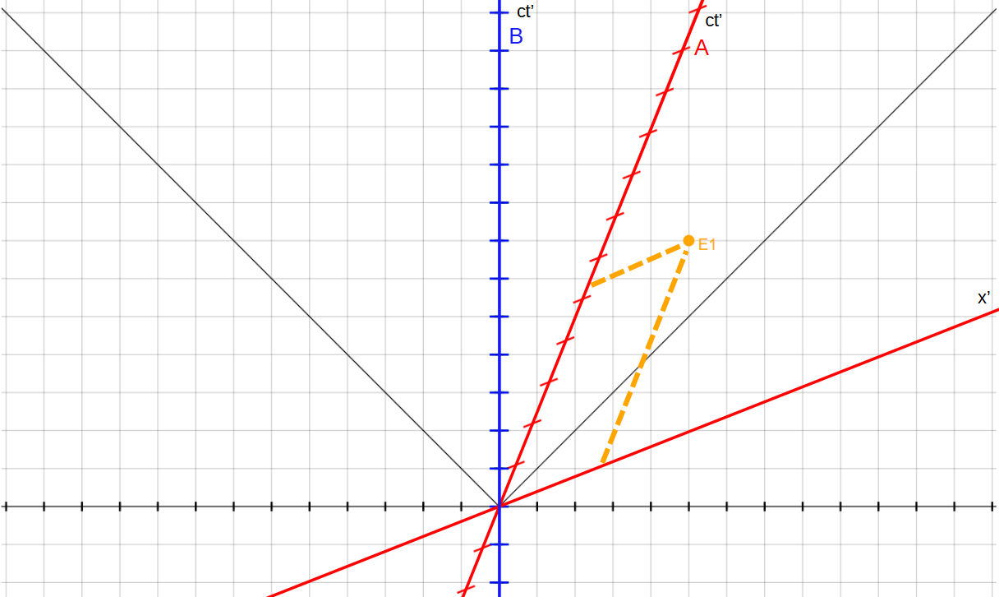
But really, there’s no need to do this! Our code does this for you as you adjust the slider to transition to the target reference frame. You can then read the coordinates as normal.
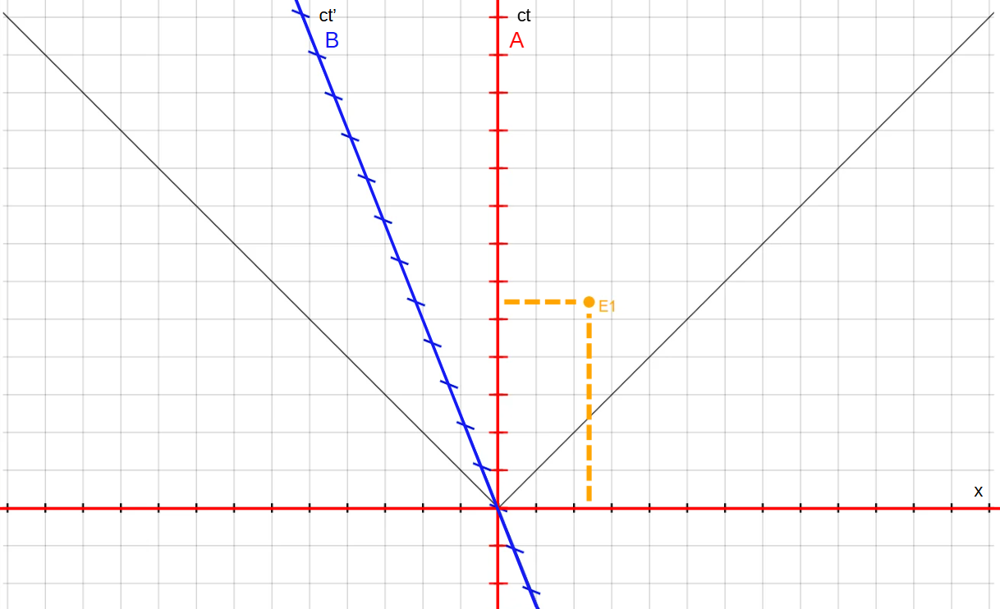
Speed of light, Light cones and Causality
It is a common misconception to think that light and its properties cause Special Relativistic effects. But really, Special Relativity doesn’t depend on the properties of light at all. Using Newton's laws of physics and the principle of relativity, it is possible to mathematically prove that there must exist one maximum speed in nature that doesn’t change depending on your reference frame. Experimental evidence shows that this maximum and invariant speed is exactly 299,792,458 m/s: the speed of light! :) So the invariance of the speed of light follows from the Principle of Relativity, which describes how our Universe fundamentally works, rather than the other way around.
As explained in the MinutePhysics videos, space-time diagrams are designed so that one vertical tick on the ct-axis corresponds to 1 second, and one horizontal tick on the x-axis corresponds to the distance light travels in 1 second. This way, the speed of light can be visualised by a line with a 45-degree slope starting at the centre and extending in both spatial directions.
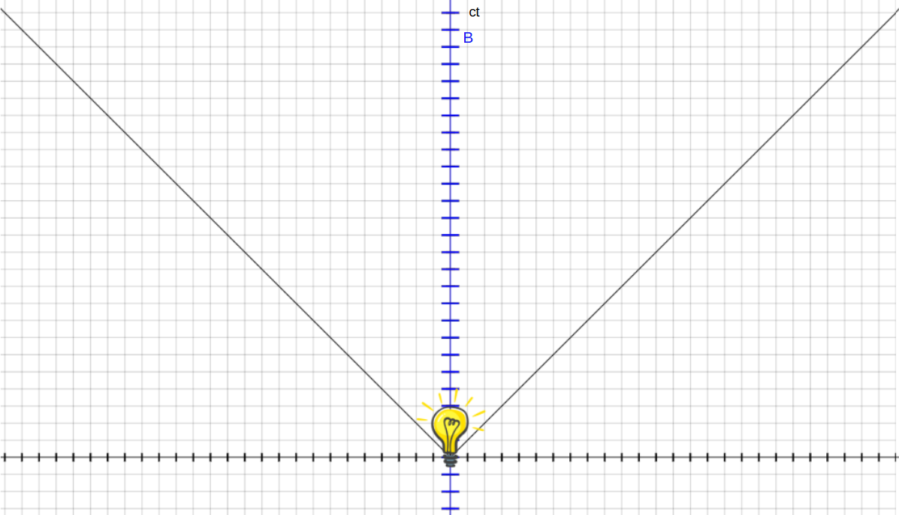
Imagine you stand in the centre of the diagram (at rest relative to the reference frame) with a light bulb, and you turn it on for one millisecond. The diagram below shows the worldlines of light rays emitted in both directions from your light bulb at time = 0. This V shape, which is created by the two worldlines of light, is what we call a future light cone. Following these lines, you can then see that these rays of light will reach x = 2 and x = -2 at ct = 2, etc.
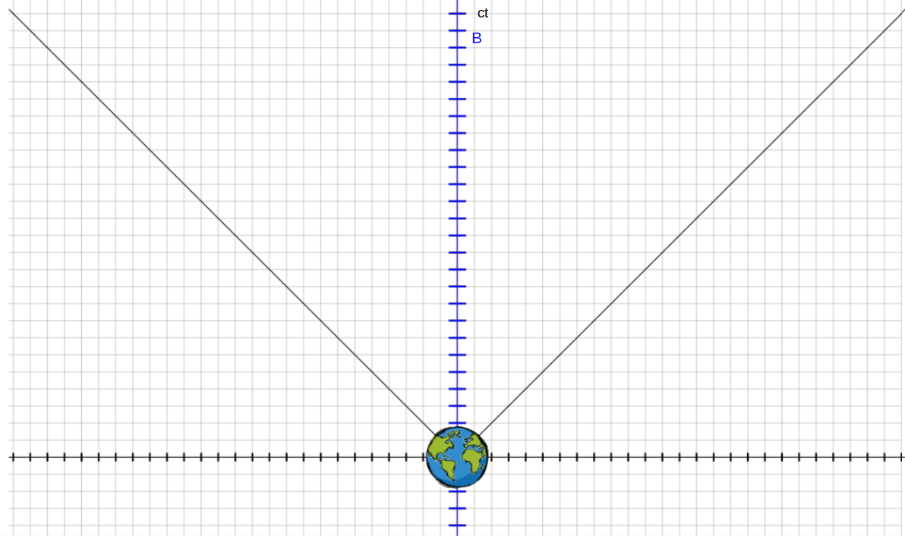
Now, let’s say that we are on Earth, which is in the middle of the diagram and at rest relative to the observer frame. Earth’s worldline is thus the vertical blue line.
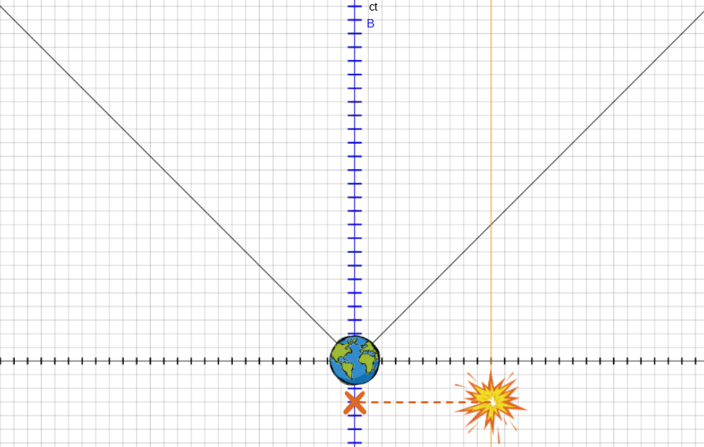
Let’s then imagine that a star, which is at rest relative to Earth, explodes 10 light-years away from Earth. The star has its own vertical worldline in yellow. The light emitted by the explosion needs time to travel from the star to Earth. This is why we don’t see the star exploding exactly when it happens, but after a time delay.
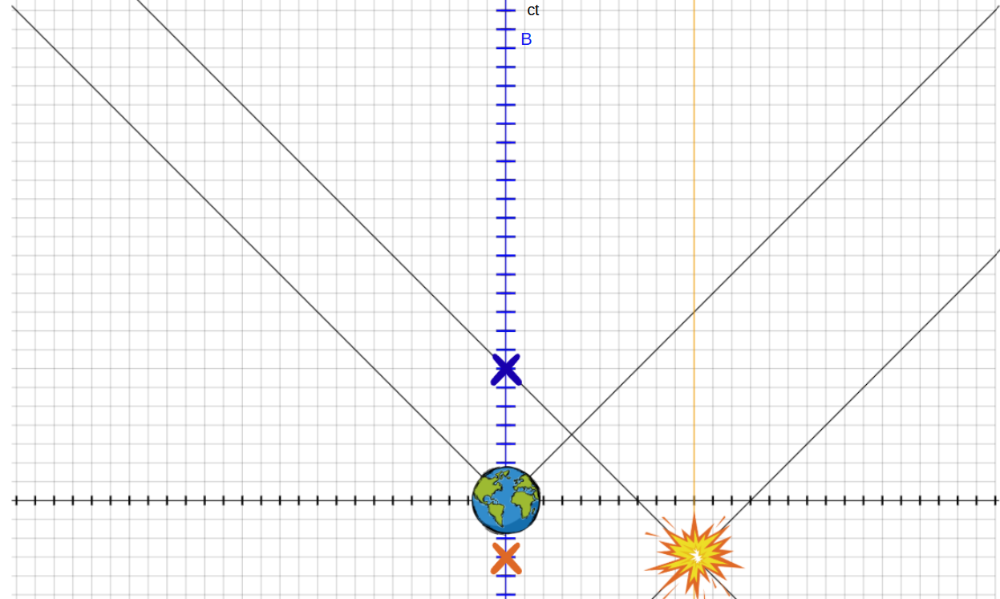
To visualise that in a space-time diagram, we need to plug in the event of the explosion, which happens at some time t1 as represented by the orange cross. Here, the explosion happened three years ago. We can draw the light cone representing photons coming from the exploding star and travelling through space-time.
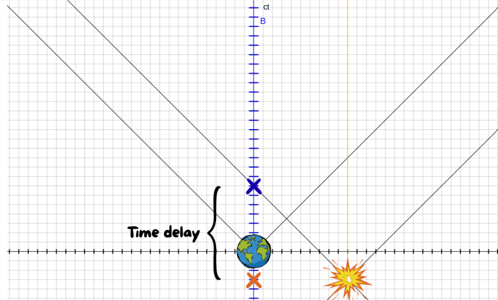
Do you notice that the left ray of photons hits Earth’s worldline at the blue cross? Let’s call that time t2. This is thus the time when the people on Earth will see the star exploding! The time difference (t1 - t2) is the time light took to go from the star to Earth. The further away the star is, the longer this time interval will be.
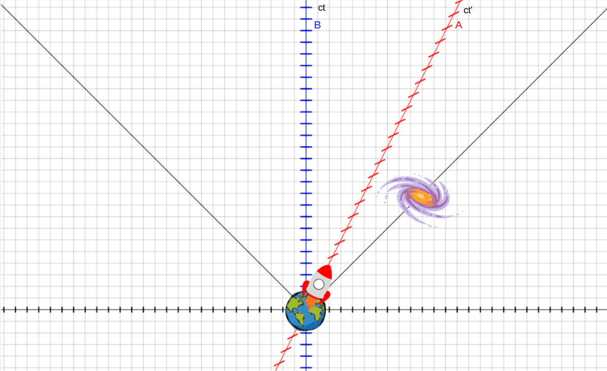
The same principle applies to moving things relative to the event. Imagine that you are now on a spaceship travelling to another galaxy at a fraction of the speed of light. The spaceship just passes by Earth at time = 0, so that Earth and the spaceship are at the coordinates (0, 0) in our diagram. The red line on the diagram below is the worldline of the spaceship.
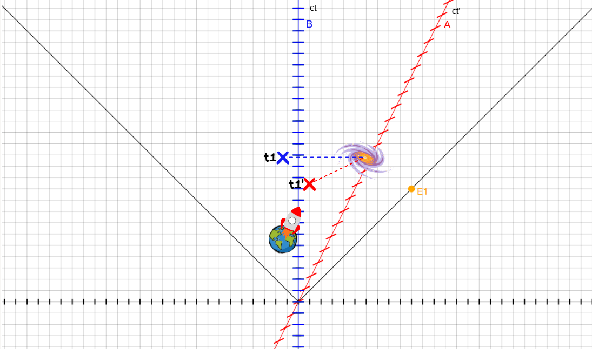
As you can see above, the galaxy explodes at t1 for Earth, but earlier, at t1’, for you in the ship (remember how projections work).
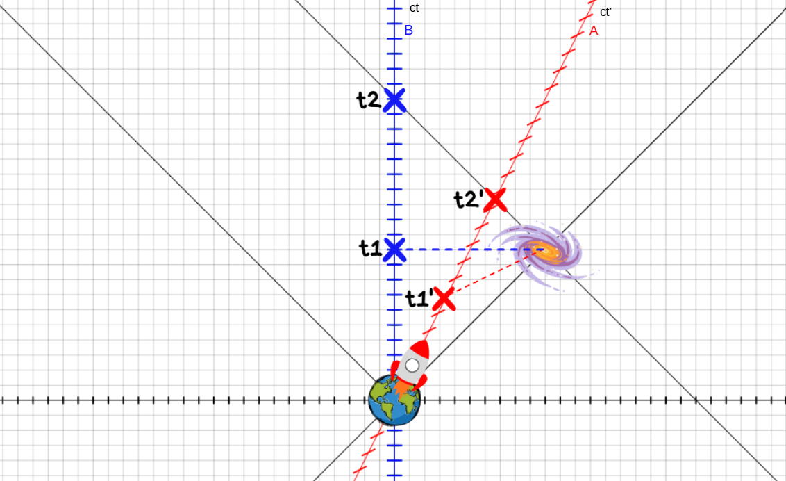
If we add the light cone of the galaxy exploding and follow it, we see it crossing Earth’s worldline at t2, but the spaceship’s worldline at t2’. In your spaceship, you thus see the galaxy exploding before anyone on Earth does.
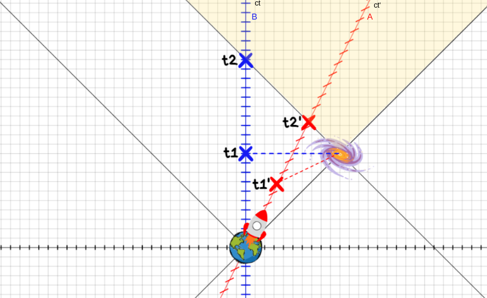
Since nothing can go faster than light, there is no way the explosion of the galaxy may have influenced things on Earth before t2. This is why all points within the future light cone (in yellow below) can be called the “causal future”: anything in this light cone might be influenced by the explosion of the galaxy.
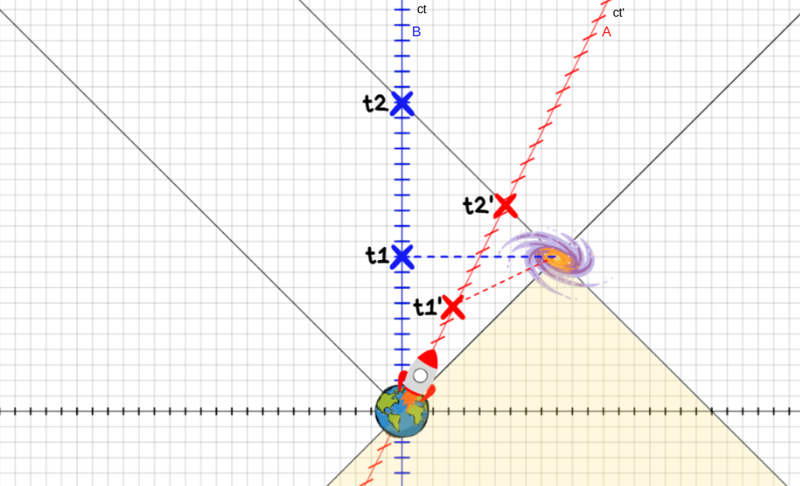
The past light cone encompassing the “causal past” is framed by the same 45-degree sloped lines, representing the light that reached the event. Only events within this past light cone might have influenced the explosion; any events outside of it were too far away for their light to travel to the galaxy in time to have influenced the explosion.
In your Special Relativity classes, you will see that events within the future or past light cone of another one are called time-like separated (because you just need to look at the future or the past to see that they can influence each other), while events outside of these light cones are called space-like separated (because they are literally too far away from the event to be influenced by it).
The Rhinoceros and the Falling Blades
Robespierre the Rhinoceros has a rest length of 5 meters, the length as seen in his own frame of reference. He has been challenged to pass through two sharp blades which are 4 meters apart and descend simultaneously in the frame of the ground.
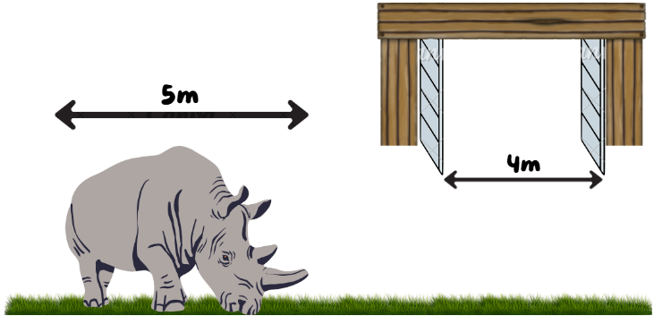
The blades are programmed to go down when Robespierre’s tail just passes the first blade, so that the first one just misses his tail, but the other neatly cuts his horn. Is there a way for him to run through these at a fraction of the speed of light so as not to be hurt?
At first glance, this situation leads to a paradox. Depending on the frame of reference used to analyse the experiment, it may seem that Robespierre survives, while another observer might conclude that he gets hit by the blades. How can different observers disagree on the outcome of the same event?
Let’s use the spacetime globe to see how Special Relativity resolves this apparent contradiction and help Robespierre find out if he’ll get through the blades safely.
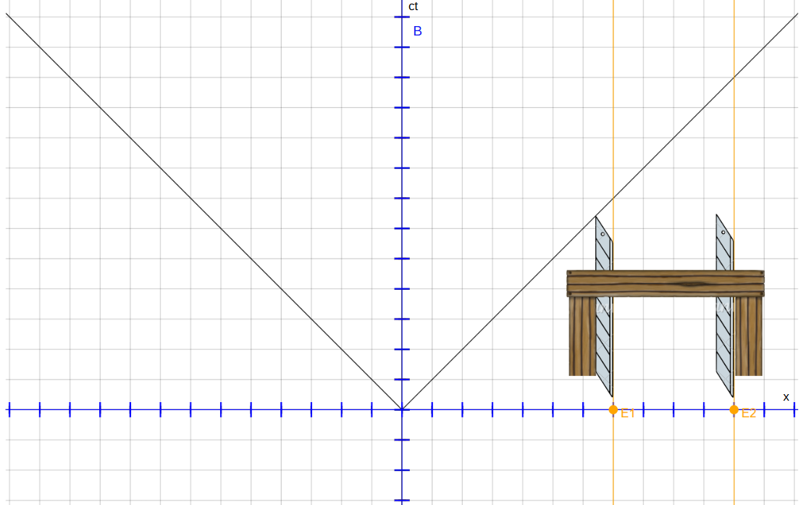
First, look at the ground’s reference frame (in blue): the blades are at rest in this reference frame because they don’t move relative to the ground. The yellow dots on the x-axis of the diagram (E1 and E2) are the positions of the blades when Robespierre starts running (at ct = 0). You can also see their worldlines, which are parallel to the blue ct-axis. Notice that the blades are 4 meters apart in this reference frame.
To avoid overcrowding the diagram, let’s remove the drawing of the blades, but keep in mind that they will still be represented by the yellow dots and their respective worldlines in future diagrams.
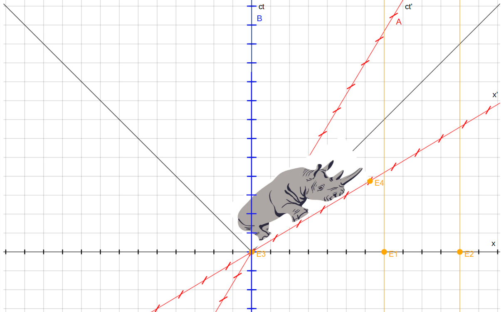
Now, let’s look at Robespierre the Rhinoceros. He runs towards the blades with a speed of 0.6c relative to the ground. The yellow dots (E3 and E4) represent the position of his tail and horn, respectively, in his tilted reference frame (in red). You can see that he is 5 meters long for the red frame. This is his proper length, the length that is measured viewed from his own reference frame.
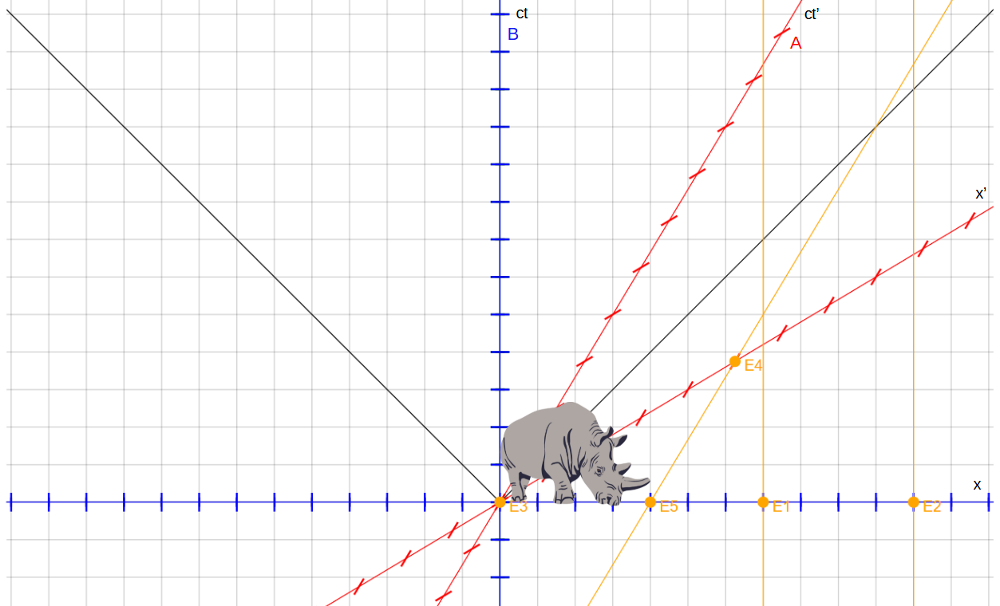
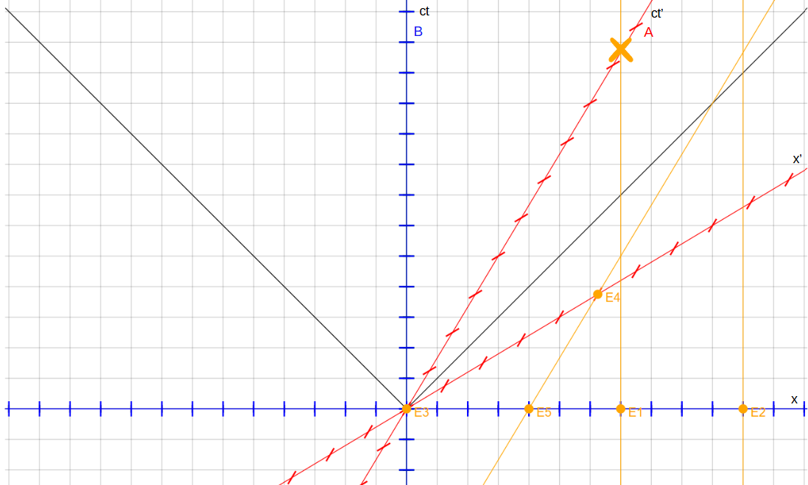
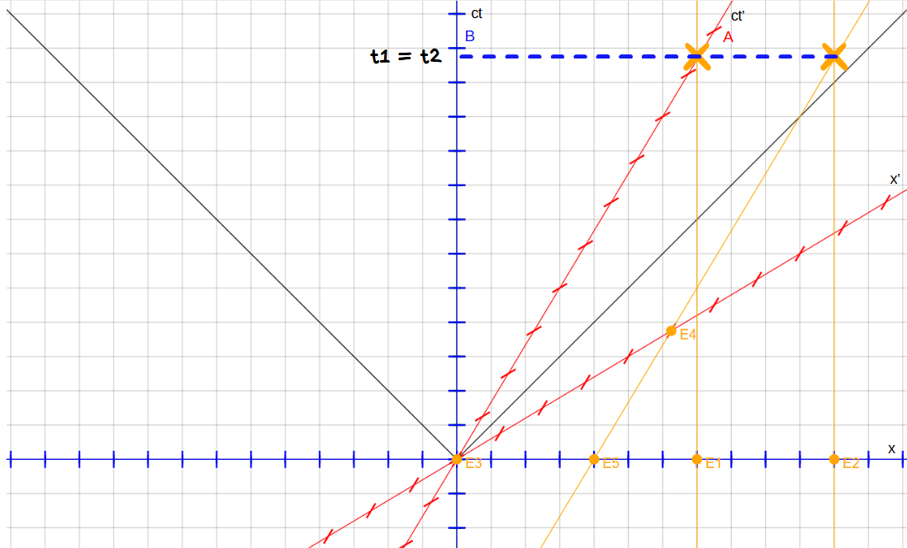
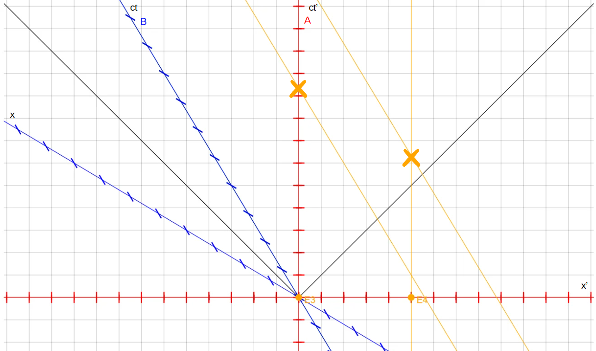
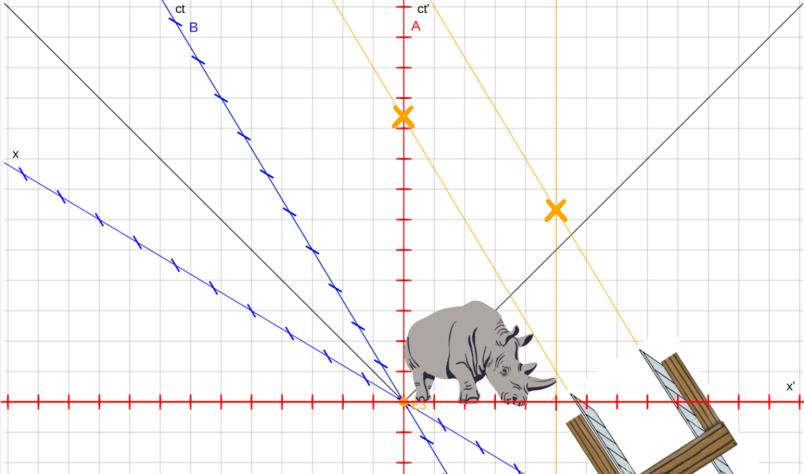
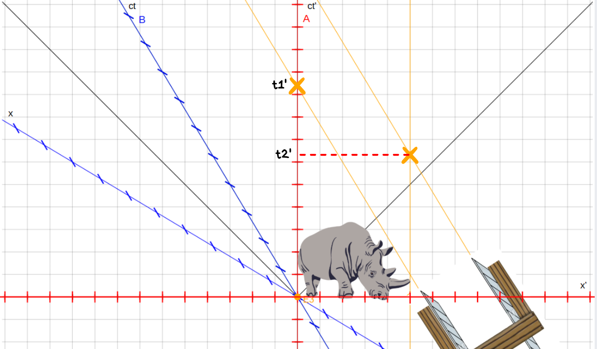